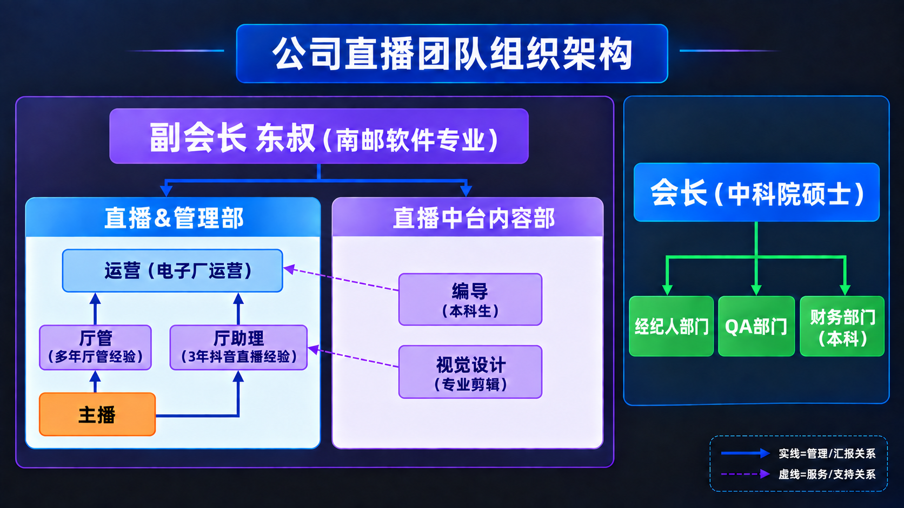
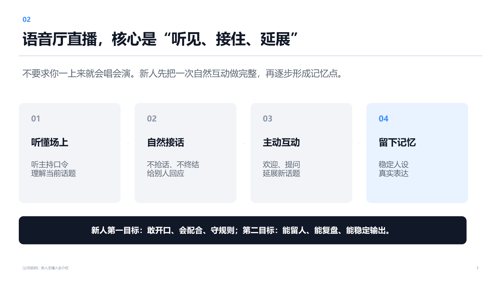

欢迎加入原声力传媒
用声音表达自己，用内容连接用户，和团队一起成长。
新人展示版 V0.1｜2026年10月11日｜预览稿
我们是做什么的
原声力传媒围绕抖音语音直播开展业务，包含远程合作的线上主播，以及到公司开展直播的线下主播。
我们通过聊天、唱歌、话题互动、游戏和主题活动，为用户提供有趣的线上娱乐体验。具体内容形式以所在语音厅的安排为准。
主播的日常，是用声音参与内容、回应用户、带动互动，并与主持和其他主播配合，共同把一场直播做好。
我们怎么做直播
用内容吸引用户。 围绕才艺、话题和互动玩法开展直播，让用户有内容可听、有话题可聊、有活动可参与。
用训练帮助新人起步。 从欢迎、接话和基础互动开始，逐步练习表达、才艺、人设与作品，结合实际表现持续改进。
用团队协作支持开播。 厅管跟进排档与培养，运营配合方法和规则，中台提供内容方面的支持，各部门共同协作。
用复盘推动进步。 关注用户是否愿意留下、是否愿意参与，以及自己在表达和配合上有哪些进步，把问题变成下一次练习的重点。
互动过程中尊重用户意愿，如实表达，遵守平台规则。
认识我们的团队

这张图可以分成三个部分来看：
| 团队 | 主要作用 |
|---|---|
| 直播与管理 | 主播、厅管、厅助理与运营配合，把直播安排和现场互动做好 |
| 直播中台内容 | 编导、视觉设计等角色提供内容与视觉方面的支持 |
| 职能支持 | 经纪人、QA、财务承担招募、入职及相关日常支持、费用结算等事项 |
图中的实线表示管理或汇报关系，虚线表示服务或支持关系。“经纪人部门”对应现行资料中的外宣招募职能。公司另设IT部门提供技术支持，具体协作按当前安排执行。
公司提供哪些支持
| 支持方向 | 你可以了解的内容 |
|---|---|
| 新人培训 | 基础规则、设备使用、互动表达，以及后续带教和反馈 |
| 直播配合 | 排档安排、现场配合、直播问题反馈与持续培养 |
| 内容支持 | 人设、作品、策划及视觉等需求，按确认的需求和排期协作 |
| 线下配套 | 为线下主播提供餐食、住宿和电脑、声卡等直播设备，具体安排按适用文件说明 |
线上和线下支持政策分别告知。收益、保底、设备使用及住宿条件，以适用的现行手册和协议为准。
线下主播有每月3000元保底口径，须满足适用履约条件；平台分成和公司直接发放的奖励计入保底。接待人会结合当前文件解释核算和发放方式。
新人先练好四件事

- 听懂场上：熟悉主持口令，理解正在聊什么。
- 自然接话：听完再回应，给别人接话的空间。
- 主动互动：练习欢迎、提问、回应和延展话题。
- 形成记忆点：结合自己的声音、性格和才艺，逐步形成内容特点。
这些是训练方向，具体训练节奏和考核安排由负责人说明。
有问题，找谁
先认识自己的当前对接人；进入厅管承接阶段后，直播和培养问题优先找厅管。
| 你遇到的问题 | 优先联系 | 本次对接人 |
|---|---|---|
| 排档、试播、互动、培训反馈 | 厅管；尚未交接时找当前对接人 | 【待填写】 |
| 线下入职手续、资料核验 | QA | 【待填写】 |
| 作品、策划、视觉或技术需求 | 当前对接人协助转接中台或IT | 【待填写】 |
| 收益、保底、费用和结算疑问 | 当前对接人协助转接相应负责人 | 【待填写】 |
反馈问题时，说明“遇到了什么、已经尝试了什么、需要什么帮助”。没有得到解决时，请当前对接人继续跟进，并确认下一次反馈时间。
加入后，先完成这三步
这是新人理解用的行动清单，具体办理顺序按适用SOP执行。
| 步骤 | 要做的事 | 完成时你应当清楚 |
|---|---|---|
| 1．确认对接 | 确认岗位、合作形式、当前联系人和后续安排 | 我负责什么、有问题找谁、下一步什么时候做 |
| 2．完成准备 | 按适用流程完成手续、规则与待遇告知、基础培训及设备检查 | 哪些内容已经完成、哪些需要补齐 |
| 3．按安排试播 | 完成开播前核验，按排档试播，结束后听取反馈 | 本次做得好的地方、下一次重点练什么 |
你的下一步：【待填写具体事项】
对接人：【待填写】
安排时间：【待填写】
欢迎你把自己的声音特点和内容优势带进团队。我们从基础开始练习，在每一次开播和复盘中积累能力。